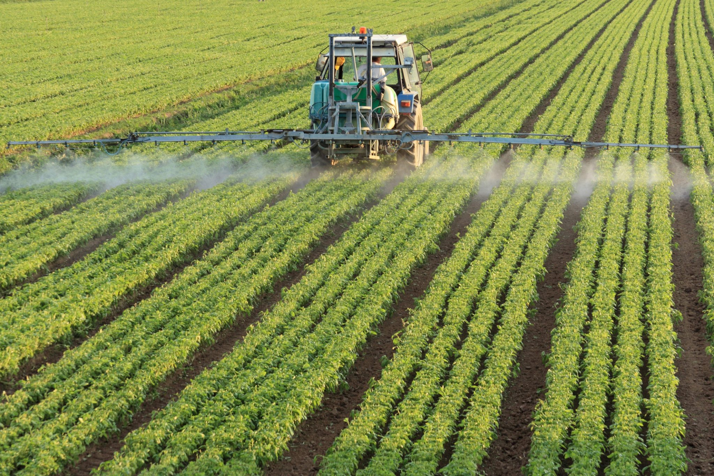

Aumento do uso de fertilizantes
o Paraná possui um alto consumo de fertilizantes, impulsionado pela sua forte produção agrícola. A diversificação de fornecedores, a busca por práticas mais sustentáveis e o
avanço tecnológico são fatores que moldam o cenário do uso de fertilizantes no estado.
